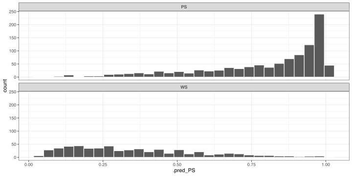

library(tidymodels)
library(doParallel)
tidymodels_prefer()
theme_set(theme_bw())
options(pillar.advice = FALSE, pillar.min_title_chars = Inf)
cl <- makePSOCKcluster(parallel::detectCores(logical = FALSE))
registerDoParallel(cl)
data(cells, package = "modeldata")
cells$case <- NULL
set.seed(123)
cell_split <- initial_split(cells, prop = 0.8, strata = class)
cell_tr <- training(cell_split)
cell_te <- testing(cell_split)
tree_spec <- decision_tree() %>% set_mode("classification")
tree_wflow <- workflow(class ~ ., tree_spec)
tree_fit <- tree_wflow %>% fit(data = cell_tr) tidymodels - Evaluating models
RaukR 2023 • Advanced R for Bioinformatics
Max Kuhn
19-Jun-2023
Previously…
Metrics for model performance
kap: is Cohen’s Kappa (maximize)mn_log_loss: “log loss” aka negaive binomial likelihood (minimize)roc_auc: area under the ROC curve (maximize)
Metrics for model performance - hard predictions
Metrics for model performance - soft predictions
Also an autoplot() method for ROC curves
Make your own combination
There are a lot of performance measures for each mode…
⚠️ DANGERS OF OVERFITTING ⚠️
Dangers of overfitting ⚠️

Dangers of overfitting ⚠️

The testing data are precious 💎
How can we use the training data to compare and evaluate different models? 🤔
Cross-validation

Cross-validation

Cross-validation cell_tr
vfold_cv(cell_tr) # v = 10 is default
#> # 10-fold cross-validation
#> # A tibble: 10 × 2
#> splits id
#> <list> <chr>
#> 1 <split [1453/162]> Fold01
#> 2 <split [1453/162]> Fold02
#> 3 <split [1453/162]> Fold03
#> 4 <split [1453/162]> Fold04
#> 5 <split [1453/162]> Fold05
#> 6 <split [1454/161]> Fold06
#> 7 <split [1454/161]> Fold07
#> 8 <split [1454/161]> Fold08
#> 9 <split [1454/161]> Fold09
#> 10 <split [1454/161]> Fold10Cross-validation cell_tr
What is in this?
Cross-validation cell_tr
Cross-validation cell_tr
vfold_cv(cell_tr, strata = class)
#> # 10-fold cross-validation using stratification
#> # A tibble: 10 × 2
#> splits id
#> <list> <chr>
#> 1 <split [1453/162]> Fold01
#> 2 <split [1453/162]> Fold02
#> 3 <split [1453/162]> Fold03
#> 4 <split [1453/162]> Fold04
#> 5 <split [1453/162]> Fold05
#> 6 <split [1454/161]> Fold06
#> 7 <split [1454/161]> Fold07
#> 8 <split [1454/161]> Fold08
#> 9 <split [1454/161]> Fold09
#> 10 <split [1454/161]> Fold10Stratification often helps, with very little downside
Cross-validation cell_tr
We’ll use this setup:
set.seed(123)
cell_rs <- vfold_cv(cell_tr, v = 10, strata = class)
cell_rs
#> # 10-fold cross-validation using stratification
#> # A tibble: 10 × 2
#> splits id
#> <list> <chr>
#> 1 <split [1453/162]> Fold01
#> 2 <split [1453/162]> Fold02
#> 3 <split [1453/162]> Fold03
#> 4 <split [1453/162]> Fold04
#> 5 <split [1453/162]> Fold05
#> 6 <split [1454/161]> Fold06
#> 7 <split [1454/161]> Fold07
#> 8 <split [1454/161]> Fold08
#> 9 <split [1454/161]> Fold09
#> 10 <split [1454/161]> Fold10Set the seed when creating resamples
We are equipped with metrics and resamples!
Fit our model to the resamples
tree_res <- fit_resamples(tree_wflow, cell_rs, metrics = cls_metrics)
tree_res
#> # Resampling results
#> # 10-fold cross-validation using stratification
#> # A tibble: 10 × 4
#> splits id .metrics .notes
#> <list> <chr> <list> <list>
#> 1 <split [1453/162]> Fold01 <tibble [3 × 4]> <tibble [0 × 3]>
#> 2 <split [1453/162]> Fold02 <tibble [3 × 4]> <tibble [0 × 3]>
#> 3 <split [1453/162]> Fold03 <tibble [3 × 4]> <tibble [0 × 3]>
#> 4 <split [1453/162]> Fold04 <tibble [3 × 4]> <tibble [0 × 3]>
#> 5 <split [1453/162]> Fold05 <tibble [3 × 4]> <tibble [0 × 3]>
#> 6 <split [1454/161]> Fold06 <tibble [3 × 4]> <tibble [0 × 3]>
#> 7 <split [1454/161]> Fold07 <tibble [3 × 4]> <tibble [0 × 3]>
#> 8 <split [1454/161]> Fold08 <tibble [3 × 4]> <tibble [0 × 3]>
#> 9 <split [1454/161]> Fold09 <tibble [3 × 4]> <tibble [0 × 3]>
#> 10 <split [1454/161]> Fold10 <tibble [3 × 4]> <tibble [0 × 3]>Evaluating model performance
tree_res %>% collect_metrics()
#> # A tibble: 3 × 6
#> .metric .estimator mean n std_err .config
#> <chr> <chr> <dbl> <int> <dbl> <chr>
#> 1 brier_class binary 0.137 10 0.00366 Preprocessor1_Model1
#> 2 kap binary 0.613 10 0.0144 Preprocessor1_Model1
#> 3 roc_auc binary 0.854 10 0.00563 Preprocessor1_Model1We can reliably measure performance using only the training data 🎉
Evaluating model performance
# Save the assessment set results
ctrl_rs <- control_resamples(save_pred = TRUE)
tree_res <- fit_resamples(tree_wflow, cell_rs, metrics = cls_metrics, control = ctrl_rs)
tree_preds <- collect_predictions(tree_res)
tree_preds
#> # A tibble: 1,615 × 7
#> id .pred_PS .pred_WS .row .pred_class class .config
#> <chr> <dbl> <dbl> <int> <fct> <fct> <chr>
#> 1 Fold01 0.943 0.0566 10 PS PS Preprocessor1_Model1
#> 2 Fold01 0.943 0.0566 20 PS PS Preprocessor1_Model1
#> 3 Fold01 0.763 0.237 25 PS PS Preprocessor1_Model1
#> 4 Fold01 0.214 0.786 31 WS PS Preprocessor1_Model1
#> 5 Fold01 0.763 0.237 41 PS PS Preprocessor1_Model1
#> 6 Fold01 0.943 0.0566 48 PS PS Preprocessor1_Model1
#> 7 Fold01 0.943 0.0566 52 PS PS Preprocessor1_Model1
#> 8 Fold01 0.214 0.786 60 WS PS Preprocessor1_Model1
#> 9 Fold01 0.943 0.0566 61 PS PS Preprocessor1_Model1
#> 10 Fold01 0.214 0.786 91 WS PS Preprocessor1_Model1
#> # ℹ 1,605 more rowsWhere are the fitted models?
tree_res
#> # Resampling results
#> # 10-fold cross-validation using stratification
#> # A tibble: 10 × 5
#> splits id .metrics .notes .predictions
#> <list> <chr> <list> <list> <list>
#> 1 <split [1453/162]> Fold01 <tibble [3 × 4]> <tibble [0 × 3]> <tibble>
#> 2 <split [1453/162]> Fold02 <tibble [3 × 4]> <tibble [0 × 3]> <tibble>
#> 3 <split [1453/162]> Fold03 <tibble [3 × 4]> <tibble [0 × 3]> <tibble>
#> 4 <split [1453/162]> Fold04 <tibble [3 × 4]> <tibble [0 × 3]> <tibble>
#> 5 <split [1453/162]> Fold05 <tibble [3 × 4]> <tibble [0 × 3]> <tibble>
#> 6 <split [1454/161]> Fold06 <tibble [3 × 4]> <tibble [0 × 3]> <tibble>
#> 7 <split [1454/161]> Fold07 <tibble [3 × 4]> <tibble [0 × 3]> <tibble>
#> 8 <split [1454/161]> Fold08 <tibble [3 × 4]> <tibble [0 × 3]> <tibble>
#> 9 <split [1454/161]> Fold09 <tibble [3 × 4]> <tibble [0 × 3]> <tibble>
#> 10 <split [1454/161]> Fold10 <tibble [3 × 4]> <tibble [0 × 3]> <tibble>🗑️
Alternate resampling schemes
Bootstrapping

Bootstrapping cell_tr
set.seed(3214)
bootstraps(cell_tr)
#> # Bootstrap sampling
#> # A tibble: 25 × 2
#> splits id
#> <list> <chr>
#> 1 <split [1615/603]> Bootstrap01
#> 2 <split [1615/589]> Bootstrap02
#> 3 <split [1615/574]> Bootstrap03
#> 4 <split [1615/590]> Bootstrap04
#> 5 <split [1615/591]> Bootstrap05
#> 6 <split [1615/609]> Bootstrap06
#> 7 <split [1615/599]> Bootstrap07
#> 8 <split [1615/579]> Bootstrap08
#> 9 <split [1615/605]> Bootstrap09
#> 10 <split [1615/586]> Bootstrap10
#> # ℹ 15 more rowsValidation sets
A validation set is just another type of resample.
This function will not go away but we have a better interface for validation in the next rsample release.
Decision tree 🌳
Random forest 🌳🌲🌴🌵🌴🌳🌳🌴🌲🌵🌴🌲🌳🌴🌳🌵🌵🌴🌲🌲🌳🌴🌳🌴🌲🌴🌵🌴🌲🌴🌵🌲🌵🌴🌲🌳🌴🌵🌳🌴🌳
Random forest 🌳🌲🌴🌵🌳🌳🌴🌲🌵🌴🌳🌵
Ensemble many decision tree models
All the trees vote! 🗳️
Bootstrap aggregating + random predictor sampling
- Often works well without tuning hyperparameters (more on this), as long as there are enough trees
Create a random forest model
Create a random forest model
rf_wflow <- workflow(class ~ ., rf_spec)
rf_wflow
#> ══ Workflow ════════════════════════════════════════════════════════════════════
#> Preprocessor: Formula
#> Model: rand_forest()
#>
#> ── Preprocessor ────────────────────────────────────────────────────────────────
#> class ~ .
#>
#> ── Model ───────────────────────────────────────────────────────────────────────
#> Random Forest Model Specification (classification)
#>
#> Main Arguments:
#> trees = 1000
#>
#> Computational engine: rangerEvaluating model performance
ctrl_rs <- control_resamples(save_pred = TRUE)
# Random forest uses random numbers so set the seed first
set.seed(2)
rf_res <- fit_resamples(rf_wflow, cell_rs, control = ctrl_rs, metrics = cls_metrics)
collect_metrics(rf_res)
#> # A tibble: 3 × 6
#> .metric .estimator mean n std_err .config
#> <chr> <chr> <dbl> <int> <dbl> <chr>
#> 1 brier_class binary 0.120 10 0.00283 Preprocessor1_Model1
#> 2 kap binary 0.625 10 0.0163 Preprocessor1_Model1
#> 3 roc_auc binary 0.903 10 0.00495 Preprocessor1_Model1collect_predictions(rf_res) %>%
ggplot(aes(.pred_PS)) +
geom_histogram(col = "white", bins = 30) +
facet_wrap(~ class, ncol = 1)